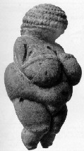
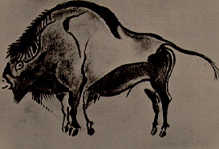

|
Prehistoric
Art
|
http://www.jlc.net/~brian/art/prehistoric.html
|
|
Others believe prehistoric art to be merely that art which was created
before the first civilizations. Artwork which is scattered across
the Earth and essentially lacks any real form.
|
|
The first generally
accepted piece of prehistoric art is assumed to be the Venus of
Willendorf [c. 30,0000 - 25,000 BC; limestone sculpture; height:
11 cm; Lower Austria]. This sculpture was small and portable. Clearly
the female reproductive anatomy has been exagerrated and it is therefore
believe that it was a fertility symbol carried by the male hunter/gatherer
as a reminder of his mate back home.
|
 |
| As
if in honor of the hunt, these primitive people would paint in the
walls of caves, honoring their ancestors who had successful hunts.
One of the major cave paintings, those is Lascaux, France, detail
this sort of venture perfectly. The image here, the Hall of Bulls
[c. 15,000 - 10,000 BC; Lascaux, France], shows one of these hunt
scenes as depicted by the hunter/gatherer society. |
|
| The
Bison below is from Altamira, Spain, another site of incredible cave
paintings. |
 |
Around 8000 BC,
a major breakthrough came to pass for hunter/gatherers. It was around
this time that major developments in domestication were founded and
the hunter/gatherer civilizations took a major step forward. It wasn't
too long after this that the ideas of agricultural cultivation were
similarly developed and once again hunter/gatherers stepped forward.
Finally, around 6000 BC, along the Nile River, it is generally assumed
that the first aspects of Ancient Egyptian civilization came to pass
and societies began to develop.
|
|